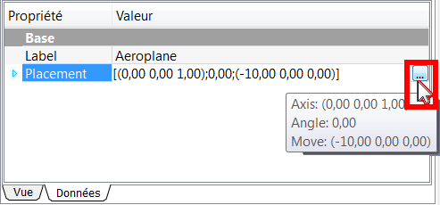
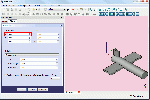
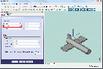
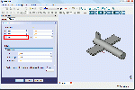
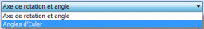

Contents
Description
Commande pour modifier le positionnement. Ces options ne concernent que la position et l'orientation de l'objet dans l'espace, ils n'affectent pas les autres attributs de la forme. Le positionnement est enregistré en interne sous forme de position et une rotation (autour d'un axe ou d'un angle, transformé en un quaternion [1]). Alors qu'il existe plusieurs méthodes pour spécifier une rotation, par exemple autour d'un centre, cela n'affecte que les calculs de rotation et il n'y a pas d'enregistrement pour des opérations suivantes. De même, si un axe de rotation (1,1,1) est spécifié, il peut être normalisé lorsqu'il est enregistré dans le quaternion et apparaît comme (0.58, 0.58, 0.58) lorsque l'on navigue sur l'objet par la suite.
Utilisation
La fonction Positionnement peut être accessible de plusieurs façons:

- ou, dans la fenêtre Affichage → Propriétés → Données → Placement → ... , 
- ou par le menu Edition → Positionnement ...
Activer Placement dans la fenêtre Affichage
- Cliquez sur une forme pour la sélectionner.
- Cliquez sur Placement (le titre, pas la petite flèche), et un bouton avec trois points apparaît:

- Cliquez sur ce bouton, et le dialogue de Placement est affiché:
Placement
Translation :
- TÂCHES X :  Déplace le système de coordonnées de l'objet, dans la direction X , par rapport aux coordonnées d'axes d'origine 0, 0, 0.
- TÂCHES Y :  Déplace le système de coordonnées de l'objet, dans la direction Y , par rapport aux coordonnées d'axes d'origine 0, 0, 0.
- TÂCHES Z :  Déplace le système de coordonnées de l'objet, dans la direction Z , par rapport aux coordonnées d'axes d'origine 0, 0, 0.
Centre :
- TÂCHES X : Déplace le centre de rotation, dans la direction X, par rapport aux coordonnées de l'objet sélectionné. (Défaut, 0,00).
- TÂCHES Y : Déplace le centre de rotation, dans la direction Y, par rapport aux coordonnées de l'objet sélectionné. (Défaut, 0,00).
- TÂCHES Z : Déplace le centre de rotation, dans la direction Z, par rapport aux coordonnées de l'objet sélectionné. (Défaut, 0,00).
- TÂCHES Défini par l'Utilisateur... : Permet de modifier les trois axes (X, Y, Z) en une seule opération
 .
.

{kind=link}
{kind=link}
{kind=link}
{kind=link}
{kind=link}
Rotation :
Ppur ajuster nos paramètres de rotation, deux moyens sont possible.
- Première option. Sélectionner Axe de rotation et angle (Par défaut)
- TÂCHES Axe : X : La rotation se fera sur l'axe X.
- TÂCHES Axe : Y : La rotation se fera sur l'axe Y.
- TÂCHES Axe : Z : La rotation se fera sur l'axe Z. (Axe par défaut).
- TÂCHES Angle : Angle de rotation en degrés de -360,00° à 360,00°. ( Par défaut : 0,00°).
{kind=link}
- Deuxième option.Sélectionner Angles d'Euler .
{kind=link}
Cette option peut être plus facile à travailler, toutefois, même dans ce mode, il y a des choses importantes à retenir :
Les rotations positives sont dans le sens Horaire, en regardant depuis l'origine le long d'un axe positif. Ou pour le dire autrement, les rotations positives sont dans le sens anti-horaire , en regardant vers l'origine le long d'un axe positif.
- Lacet : Le lacet est le mouvement de rotation horizontal d'un mobile autour d'un axe vertical. (Le lacet est l'angle Psi ψ)
- Tangage : Le tangage est défini comme étant un mouvement d'oscillation d'un bateau d'avant en arrière. (Le tangage est l'angle Phi φ).
- Roulis : Le roulis est un mouvement de rotation d'un mobile autour de son axe longitudinal (axe de roulis). (Le Roulis est l'angle Thêta θ).
Lacet, roulis et tangage se référent à l'attitude d'un objet dans l'espace 3D. Ces termes sont couramment utilisés dans l'aviation.
Les angles sont les angles Tait-Bryan. Si vous voulez plus d'informations, essayez Euler angles.
{kind=link}

- TÂCHES Axe de lacet : Le Lacet est la rotation autour de l'axe Z, c'est à dire une rotation de gauche à droite. (Le lacet est l'angle Psi ψ). Valeur de -360,00° à 360,00° (Défaut, 0,00°).

- TÂCHES Axe de tangage : Le Tangage est la rotation autour de l'axe des Y, c'est à dire monter, et, descendre le nez. (Le tangage est l'angle Phi φ). Valeur de -360,00° à 360,00° (Défaut, 0,00°).

- TÂCHES Axe de roulis : Le Roulis est la rotation autour de l'axe X, c'est à dire monter et descendre les ailes. (Le Roulis est l'angle Thêta θ). Valeur de -360,00° à 360,00° (Défaut, 0,00°).
- TÂCHES Appliquer les modifications incrémentielles au placement de l'objet : Une fois cochée, cette option met virtuellement les paramètres à zéro, pour vous permettre d'entrer vos valeurs sans devoir faire de calcul avec les paramètres originaux de la forme.
Une fois que vous aurez validé avec OK , les valeurs entrées s’additionneront aux valeurs de la forme.
- Le bouton Réinitialiser , remet toutes les valeurs à 0,0,0.
Liens et Exemple
Un exemple pratique de l'utilisation de cette commande est dans le tutoriel Avion.
Autres explications sur le Placement